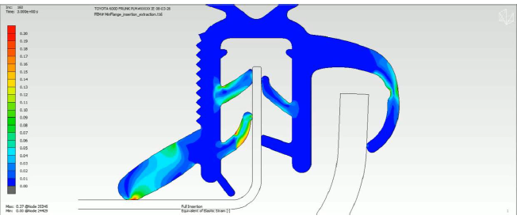
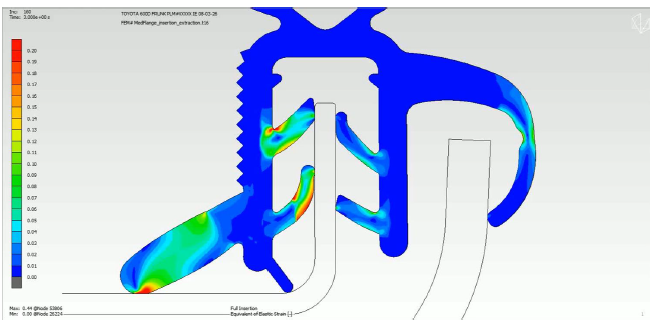
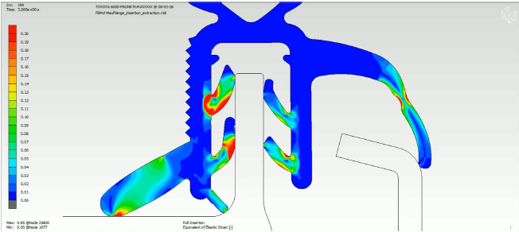
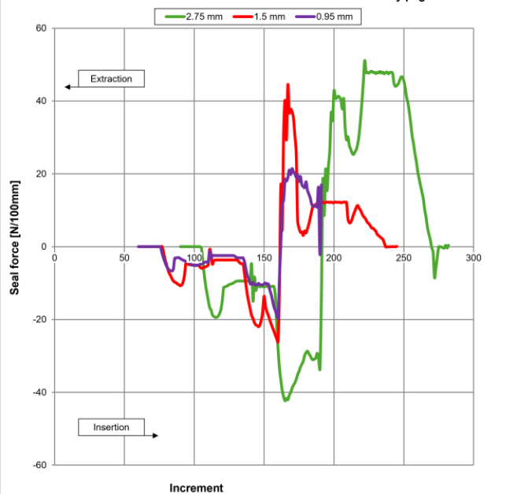

Truck Door Sealing Analysis

Project Overview
I independently performed nonlinear finite element analyses in MSC Marc/Mentat to evaluate how flange thickness affected the insertion and extraction forces of an automotive sealing profile. The study compared three thicknesses—0.95, 1.50, and 2.75 mm—representing the lower limit, an intermediate size, and the upper limit of the evaluated range.
My objective was to compare force behavior across these configurations and use the results to support a flange-thickness recommendation.
Simulation and Deformation Analysis
I analyzed the seal’s response during insertion and extraction, comparing the resulting force curves and deformed profiles for each flange thickness. The simulations captured how the seal’s gripping features deformed as they contacted the flange.
Alongside the force comparison, I examined equivalent elastic strain contours to understand where deformation was concentrated and how it changed across the three configurations.
0.95 mm

1.50 mm

2.75 mm

Force Comparison and Findings
I compared peak insertion and extraction force magnitudes, together with the consistency of the force response throughout each simulation. Among the three configurations, the 0.95 mm flange produced the lowest and most consistent insertion and extraction forces.
The comparison showed how changing flange thickness altered the seal’s mechanical response. Based on the force behavior evaluated in this study, I recommended the 0.95 mm flange as the preferred configuration.

Engineering Review and Reporting
After completing the analyses, I discussed the findings, potential design changes, and recommendations with senior engineers. These discussions combined my independent analysis with collaborative engineering review before I prepared the final technical report.
The report documented the analysis setup, force curves, deformed profiles, and comparison across flange sizes, providing a basis for informed design decisions.
Project Outcome
This project strengthened my ability to independently complete nonlinear contact analyses, interpret force and deformation results, and communicate a design recommendation. It also gave me experience presenting simulation findings to senior engineers and incorporating their feedback into a technical report.